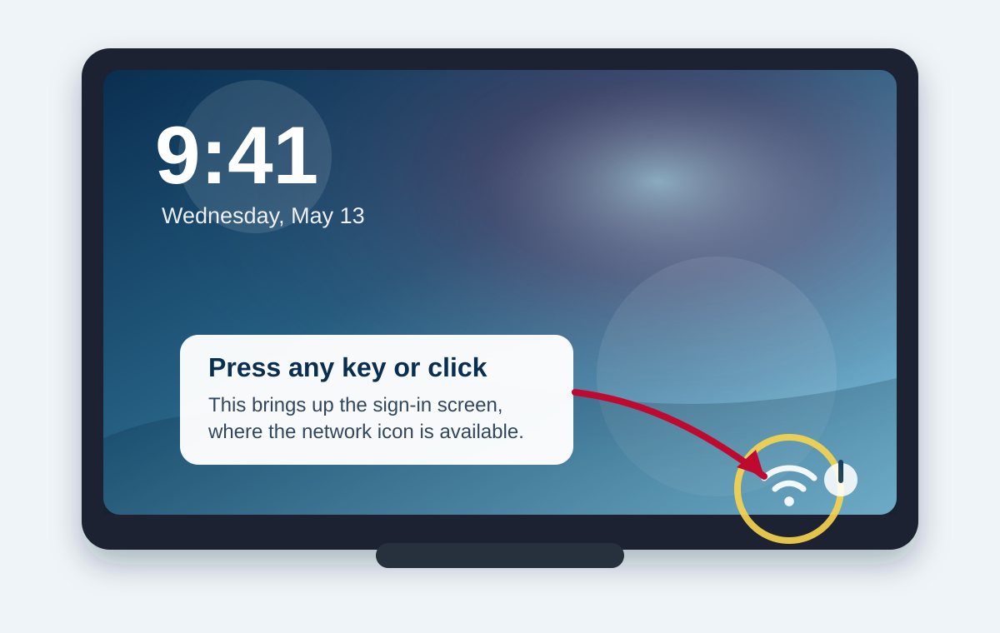
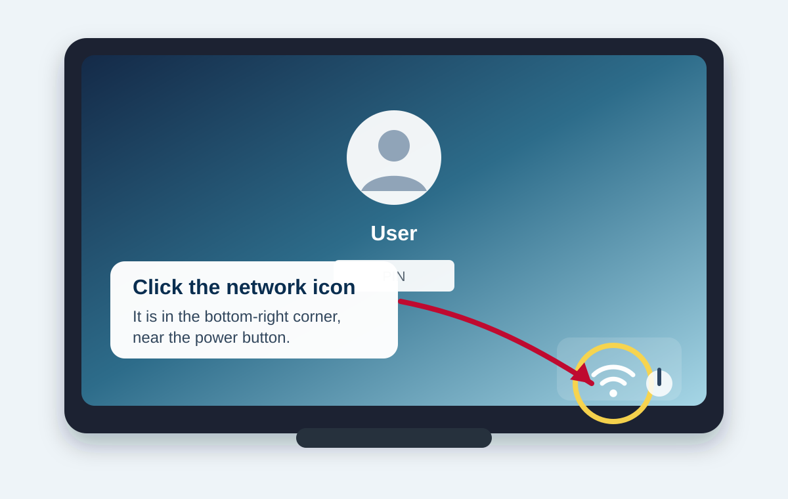
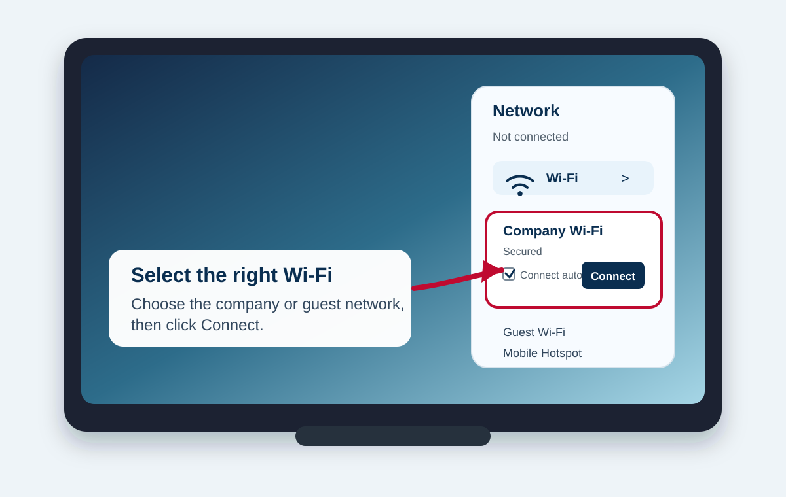
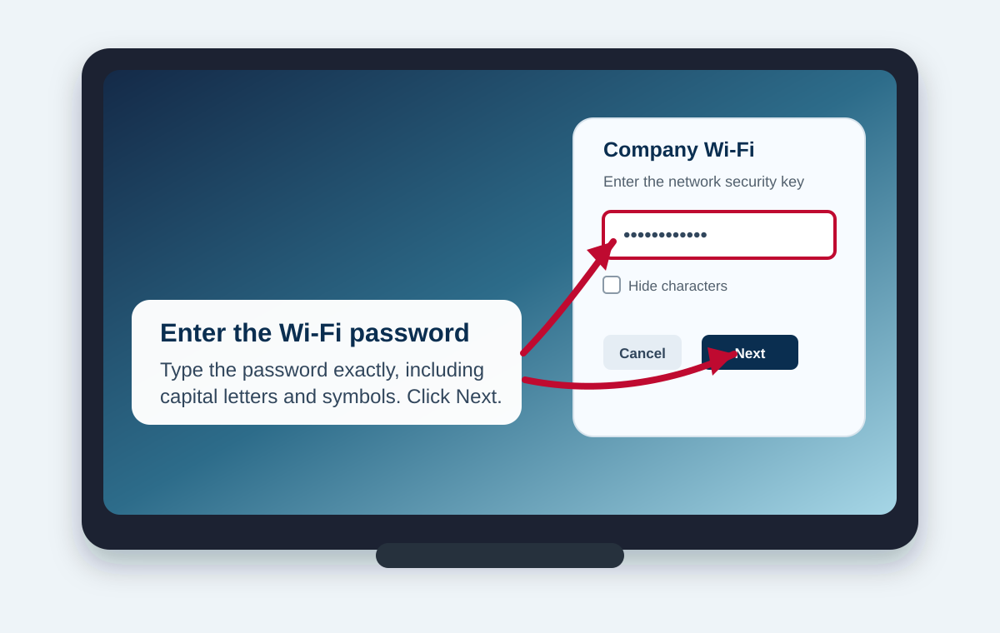
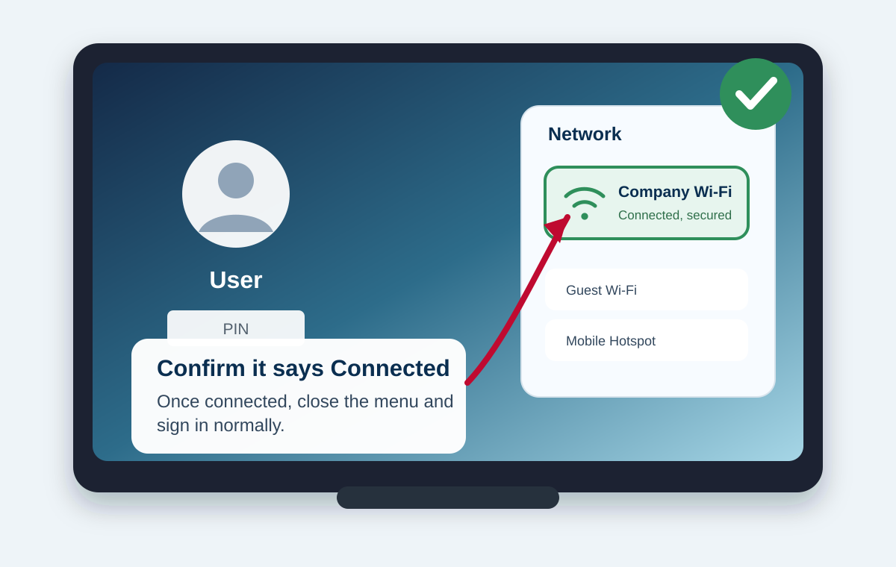

How to Connect a Locked Windows 11 PC to Wi-Fi
Use this guide when a Windows 11 computer is sitting at the lock or sign-in screen and needs internet access before the user signs in.
Need
The exact Wi-Fi name, also called the SSID.
Need
The Wi-Fi password or company-provided credentials.
Result
The PC shows “Connected, secured” and the user can sign in normally.
Steps
Wake the sign-in screen
If the computer only shows the lock screen clock or wallpaper, press any key, tap the trackpad, or click once. This should reveal the Windows sign-in screen.

Click the network icon
Look in the bottom-right corner of the sign-in screen. Click the network or Wi-Fi icon near the power button.

Select the correct Wi-Fi network
Choose the correct company, guest, or hotspot network. Leave “Connect automatically” checked if this PC should reconnect to that network later, then click Connect.

Enter the Wi-Fi password
Type the Wi-Fi password exactly as provided. Capital letters, spaces, and symbols matter. Click Next.

Confirm the connection and sign in
Wait for the network to show Connected, secured. Close the network menu if needed, then sign in normally.

Troubleshooting
No network icon appears
Press any key to make sure you are on the sign-in screen. If the icon is still missing, the computer may be blocked by policy, missing a Wi-Fi driver, or have Wi-Fi disabled. Contact IT or use Ethernet/USB-C Ethernet.
The network list is empty
Move closer to the Wi-Fi access point, wait 30 seconds, and refresh the list if the option appears. If no networks appear, the Wi-Fi adapter may be disabled or unavailable.
The password fails
Check capitalization and symbols. Confirm you selected the correct network name; similar guest and staff networks often use different passwords.
Hotel or public Wi-Fi needs a webpage
Networks that require a browser login usually cannot be completed from the lock screen. Use a mobile hotspot, Ethernet, or sign in first with cached credentials.
Source note: The core Windows 11 Wi-Fi flow follows Microsoft Support’s current guidance: open network/quick settings, choose the Wi-Fi network, select Connect, enter the network password, then select Next.
Reference: Connect to a Wi-Fi network in Windows - Microsoft Support. Images in this handout are original illustrations, not Microsoft screenshots.